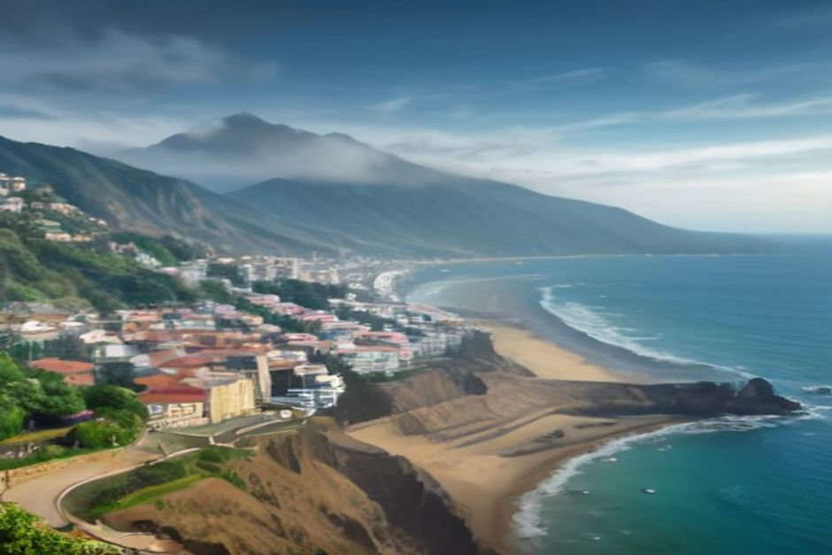

Vous cherchez le jour férié à Madère pour éviter une porte close ? Bonne nouvelle : à Funchal, banques et administrations ferment, mais restaurants, hôtels, taxis et sorties en mer continuent de tourner. Voici les dates de 2026, celles qui sont propres à l'île et ce que cela change concrètement pour vous.
Les jours fériés à Madère en 2026, date par date
Madère applique le calendrier national portugais, auquel s'ajoutent deux dates régionales. Voici les jours fériés nationaux de 2026, avec le jour de la semaine pour repérer d'un coup d'œil ceux qui tombent un week-end :
- 1er janvier (jeudi) : Jour de l'An
- 3 avril (vendredi) : Vendredi saint
- 5 avril (dimanche) : Pâques
- 25 avril (samedi) : Jour de la Liberté, qui commémore la révolution des Œillets
- 1er mai (vendredi) : Fête du Travail
- 4 juin (jeudi) : Fête-Dieu
- 10 juin (mercredi) : Jour du Portugal
- 15 août (samedi) : Assomption
- 5 octobre (lundi) : Jour de la République
- 1er novembre (dimanche) : Toussaint
- 1er décembre (mardi) : Restauration de l'indépendance
- 8 décembre (mardi) : Immaculée Conception
- 25 décembre (vendredi) : Noël
Ce sont des jours fériés civils : banques, services publics, écoles et la plupart des commerces ferment. Les dates fixes reviennent chaque année au même jour du calendrier. Seuls le Vendredi saint, Pâques et la Fête-Dieu bougent avec Pâques : vérifiez-les si vous voyagez une autre année.

Dia da Madeira et autres jours fériés que le continent ne connaît pas
C'est ce qui distingue l'île du reste du Portugal. Deux dates sont régionales, observées partout à Madère, mais ni sur le continent ni aux Açores :
- Le 2 avril, Jour de l'Autonomie de Madère, en souvenir de la constitution de 1976 qui a donné à l'archipel son autonomie politique.
- Le 1er juillet, le Dia da Madeira (Jour de Madère, ou Dia da Região), qui commémore l'arrivée des Portugais à Machico en 1419.
Funchal a en plus son propre jour férié municipal, le 21 août, la fête de la ville. Il concerne la capitale, pas toute l'île. En 2026, le 2 avril est un jeudi, le 1er juillet un mercredi et le 21 août un vendredi.
Que ferme-t-on vraiment un jour férié ?
Pour un voyageur, la liste est courte. Ferment : les banques, les administrations, la poste, de nombreux petits commerces et la plupart des pharmacies, hors système de garde. Les grandes surfaces ouvrent souvent avec des horaires réduits plutôt que de fermer tout à fait. Les transports publics suivent en général un horaire allégé, comme le dimanche.
Concrètement : si vous devez retirer de l'argent au guichet, envoyer un colis ou faire une démarche officielle, évitez ces jours-là. Pour le reste, vous ne verrez presque pas la différence.
Restaurants, marché, taxis : ce qui reste ouvert à Funchal
En France, un jour férié ressemble volontiers à un dimanche. À Funchal, c'est différent : l'économie de l'île vit du tourisme et ne s'arrête pas. Restaurants, cafés, hôtels, le Mercado dos Lavradores et la Zona Velha gardent leurs horaires habituels. Taxis, locations de voiture et principales attractions fonctionnent aussi.
Funchal paraît même plus vivante : les habitants sont dehors au lieu d'être au travail, les terrasses se remplissent. Par prudence, réservez quand même votre table à l'avance pour un déjeuner de fête.
Mardi gras est-il un jour férié à Madère ?
C'est une question que se posent beaucoup de lecteurs. Le mardi gras n'est pas un jour férié national obligatoire au Portugal, mais à Madère on le traite comme tel par tradition. Le 17 février 2026, les écoles ont fermé, de nombreux bureaux ont donné congé, et Funchal a organisé son grand défilé sur l'Avenida do Mar l'après-midi et le soir.
Le lundi gras ferme parfois plus tôt. Si vous venez en février, vérifiez les horaires d'un commerce ou d'un bureau avant de vous y rendre. Pour les sorties touristiques, prévoyez simplement plus de monde en ville.
Jours fériés et ponts : quelles dates regarder pour votre séjour
Le Portugal ne reporte pas un jour férié tombant un samedi ou un dimanche : il disparaît dans le week-end, sans jour de congé en plus. Ce qui crée un week-end prolongé, c'est un férié du mardi ou du jeudi, quand beaucoup d'habitants « font le pont » en prenant aussi le lundi ou le vendredi.
En 2026, le lundi 5 octobre prolonge déjà le week-end à lui seul. Le mercredi 1er juillet tombe en milieu de semaine, à proximité du week-end suivant. L'Assomption, le samedi 15 août, n'ajoute pas de jour de congé. Pour vous, l'effet se limite à un peu plus de circulation sur les routes côtières et des points de vue plus fréquentés.
Le 1er juillet : fêter le Dia da Madeira sans rien manquer
Le Dia da Madeira vaut qu'on organise un séjour autour de lui. La baie de Funchal se remplit de défilés, de feux d'artifice et de concerts gratuits. Début juillet, la mer commence à se réchauffer : on peut profiter de la journée en mer et garder la soirée pour les festivités.
Mieux vaut réserver votre hébergement et vos sorties tôt si cette date vous tente : les habitants sortent en nombre.
Faire une sortie en bateau un jour férié
Oui, c'est même une bonne idée. Les bureaux et beaucoup de commerces sont fermés, les routes et les belvédères voient plus de monde, mais la mer, elle, reste aussi calme et dégagée qu'un autre matin. Une sortie en bateau privé avec Chifbay a lieu les jours fériés comme n'importe quel autre jour. Le bateau est à votre groupe seul, jusqu'à 5 personnes, avec deux skippers de Madère.
Deux formules, au départ de la Marina do Funchal, ponton C. Les prix s'entendent pour tout le bateau, jamais par personne :
- La sortie à la journée, départ à 10 h ou à 14 h : 2 h 30 jusqu'à Ribeira Brava pour 500 €, ou 3 h jusqu'à Ponta do Sol pour 600 €. Au programme : Câmara de Lobos, Cabo Girão, baignade et paddle à la Fajã dos Padres.
- La sortie coucher de soleil, départ 1 h 15 avant le coucher du soleil, toute l'année : 2 h jusqu'à Cabo Girão pour 400 €, ou 2 h 30 jusqu'à Ribeira Brava pour 500 €. Pas de baignade.
Chaque sortie comprend repas et boissons à bord, une vidéo 360° Insta360, des images de drone si la météo le permet et des photos prises avec un vrai appareil. L'annulation est gratuite jusqu'à 24 heures avant le départ. Si vous hésitez entre plusieurs idées, notre comparatif des sorties en bateau à Madère vous aidera, et la page infos pratiques répond aux questions du jour J.
Dauphins, baleines ou belle lumière ne se promettent pas : quand ils sont au rendez-vous, c'est un cadeau.
Aucun jour férié de Madère n'est une raison d'éviter une date : c'est plutôt une raison d'être à Funchal ce soir-là.
L'essentiel à retenir
Regardez le calendrier si vous avez besoin d'une banque ou d'une administration. Ignorez-le si vous venez pour la côte, la table ou la mer : le tourisme ne prend pas de jour de congé. Et si vous passez par Funchal le 1er juillet, le Dia da Madeira est l'une des plus belles soirées de l'année pour y être.
Pour d'autres idées, parcourez toutes les expériences ou notre journal, et lisez les avis de nos passagers.